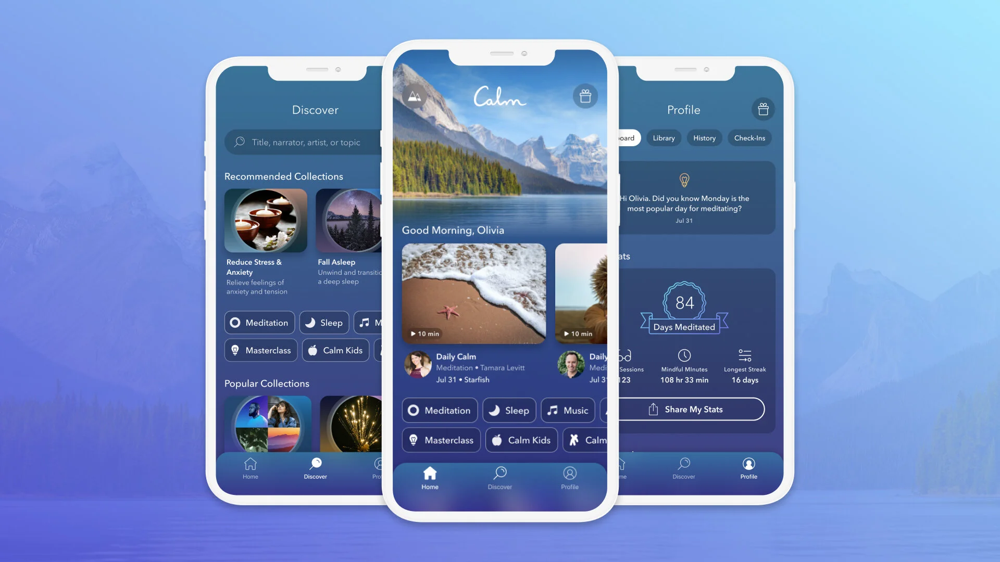

Stress Testing AI Meditation
School and recruiting have been picking up intensity—midterms, case prep, networking events, finance interviews. I’ve been consistently stressed and not sleeping well. A friend suggested trying Calm, the meditation app that claims to use AI for personalized relaxation.
I’m skeptical of wellness apps in general, but I figured this was a good test case: if AI personalization works anywhere, it should work when I’m actually stressed and need it. So I signed up for a week to see if the “AI-powered personalization” is real or just marketing.

Calm’s interface showing meditation recommendations
What These Apps Claim to Personalize
The AI Features
According to the app and marketing materials: - Personalized daily recommendations based on your stress patterns - Adaptive session length that adjusts to your schedule - Content matching that learns which meditation styles work best for you - Check-in analysis that tracks your emotional state over time - Smart reminders that send notifications when you’re most likely to need meditation
The Setup Process
When I first opened the app, it asked: - Why I’m using Calm (options: stress, sleep, focus, anxiety, etc.) - My experience level with meditation (beginner, intermediate, experienced) - What time of day I prefer to meditate - Whether I want daily reminders
Then it presented a “personalized” home screen with recommended meditations.
Right away, I’m wondering: is this AI learning, or just a decision tree based on my initial answers?
My Week of Testing
Day 1-2: Initial Recommendations
The app recommended: - “Managing Stress” - 10 minute guided meditation - “Calming Anxiety” - 15 minute session - “Sleep Stories” for nighttime
These matched what I selected during setup (stress management). But they’re also probably what everyone who selects “stress” gets recommended. Nothing personalized yet.
I tried the 10-minute stress management session. It was fine—standard guided meditation with breathing exercises and body scan. At the end, it asked “How do you feel?” with options: Calm, Relaxed, Same, Restless.
I selected “Relaxed.” Let’s see if the app learns from this.
Day 3-4: Different Stress Levels
On Day 3, I had two interviews back-to-back. Before the first one, I did a quick 5-minute “Focus” meditation the app recommended.
After interviews, I was exhausted and stressed. Opened the app again that evening. It recommended… the same 10-minute stress management session from Day 1.
Wait—shouldn’t it notice I used the app twice in one day, during high-stress moments, and adjust its recommendations? Maybe suggest something longer or more intensive?
Instead, the recommendations looked identical to Day 1.
Day 5-7: Checking for Patterns
I deliberately tried different meditation types: - Morning: 7-minute “Daily Calm” meditation - Afternoon: 10-minute breathing exercise - Night: 20-minute sleep story
Each time, I marked how I felt afterward. Sometimes “Calm,” sometimes “Same,” once “Restless” (I was too stressed to focus).
By Day 7, my recommendations were… still basically the same as Day 1. A few new options appeared in the “Recommended for You” section, but they seemed randomly rotated rather than based on what I’d actually used or found helpful.
Is This Actually AI Personalization?
What Would Real Personalization Look Like?
If Calm were truly using AI to personalize my experience, I’d expect:
Usage pattern recognition: Notice that I meditate more frequently during high-stress periods (like Day 3 with interviews) and suggest more intensive practices during those times.
Effectiveness tracking: If I consistently rate 7-minute sessions as “Relaxing” but 20-minute sessions as “Restless” (because I can’t focus that long when stressed), it should recommend shorter sessions.
Time-of-day optimization: Learn that I actually use the app most in the evening, not morning, despite saying “morning” in my initial setup.
Content adaptation: If I skip certain meditation styles repeatedly, stop recommending them.
What I Actually Observed
The recommendations seemed based on: - My initial survey answers (static profile) - General content rotation (everyone sees different things each day) - Basic category matching (I said “stress,” so I get stress-related content)
This isn’t machine learning—it’s a preference quiz with some randomization.
The “Check-In” Feature
Calm asks “How do you feel?” after each session. This data could theoretically train a model to learn what works for me.
But after a week of providing this feedback, I saw no evidence it changed anything. The app didn’t: - Suggest more of what I rated highly - Avoid what I rated poorly - Adjust session length based on my responses - Change reminder timing based on when I actually use the app
According to research on adaptive meditation apps, truly personalized digital interventions should show measurable adaptation over time. I didn’t see this.
AI Meditation vs. Regular Guided Meditation
What Makes Meditation Effective
Research on meditation effectiveness shows it depends on: - Consistency of practice - Finding techniques that match your needs - Appropriate session length for your focus capacity - Quality of instruction
None of these inherently require AI. A good meditation teacher, a simple YouTube video, or even free apps without “AI” can provide these.
Does AI Add Value?
In theory, AI personalization could help by: - Learning which techniques work for your specific stress patterns - Adapting difficulty as you build meditation capacity - Identifying optimal times for practice based on your schedule
But Calm doesn’t seem to do this. The “AI” label appears to be marketing rather than meaningful personalization.
The Free Alternative
I compared Calm to free guided meditations on YouTube and Spotify. Many are: - Same quality instruction - Same variety of styles and lengths - No subscription fee - Equally effective
The main advantage of these apps is convenience (everything in one app) and production quality (nice UI, good voice actors). But these aren’t AI features—they’re just app design.
You could manually build a YouTube playlist of meditations that work for you, and that “personalization” would be more effective than Calm’s alleged AI.
The AI-ification of Wellness Apps
Why Everything Is “AI-Powered” Now
Calm isn’t alone. Nearly every wellness app now claims AI: - “AI-powered” workout plans - “AI-driven” nutrition coaching - “AI-enhanced” sleep tracking - “AI-personalized” meditation
The pattern is clear: adding “AI” to your app: - Justifies higher subscription prices (Calm is $70/year) - Makes the app sound more sophisticated - Appeals to tech-forward users - Differentiates from free alternatives
What’s Probably Happening
Most “AI personalization” in wellness apps is likely: - Simple if-then logic based on user inputs - Random content rotation to create variety - Basic categorization (stress → stress content) - A/B testing to optimize engagement (not personalization)
These are useful features, but they’re not AI in any meaningful sense.
According to analysis of health app AI claims, most apps labeled as “AI-powered” show no evidence of machine learning in their actual operation. Calm appears to fit this pattern.
Did It Actually Help With Stress?
The Honest Assessment
Yes, using Calm helped me feel less stressed during recruiting season. But I’m pretty sure this had nothing to do with AI:
Meditation works: Taking 10 minutes to breathe and focus helps reduce stress. This is true whether you use a paid app, YouTube, or just sit quietly.
Guided instruction helps: Having someone guide you through meditation is easier than doing it alone, especially as a beginner. But good instruction doesn’t require AI.
Convenience matters: Having all meditations in one app makes it more likely I’ll actually do it. But this is about app design, not AI.
Reminder system: The daily notifications helped build a habit. Again, not AI—just push notifications.
Would Free Alternatives Work as Well?
Probably yes. The benefit came from: 1. Deciding to prioritize meditation during a stressful period 2. Having accessible guided content 3. Following through consistently
None of this required Calm specifically or its “AI” features.
The Placebo Question
There’s a possibility that believing the app is “personalized” makes it more effective through placebo effect. If you think the AI is customizing meditations for your specific needs, you might engage more seriously.
But this raises an ethical question: should companies charge premium prices for placebo effects based on false AI claims?
Should You Use AI Meditation Apps?
Use Them If:
- You want convenient access to guided meditation
- You find the UI and production quality motivating
- You’re willing to pay for convenience
- You need variety in meditation styles
But don’t pay extra for “AI personalization” that probably isn’t real.
Skip Them If:
- You’re comfortable finding free meditations on YouTube/Spotify
- You don’t need an app to motivate practice
- You’re skeptical of premium subscription prices
Better Approaches:
Try free options first: Use YouTube or free apps (Insight Timer, UCLA Mindful) to see if guided meditation helps you.
Manual personalization: Pay attention to which meditation styles, lengths, and times of day work best for you. This is better personalization than any AI.
Focus on consistency over features: The best meditation app is the one you’ll actually use. Fancy AI features don’t matter if you don’t build a habit.
Question the AI label: When any wellness app claims AI, ask: “What is the AI actually doing that couldn’t be done with basic programming?”
Final Thoughts
Calm is a well-designed meditation app with good content. The guided meditations helped me manage stress during a busy recruiting and school period.
But the “AI personalization” appears to be marketing rather than meaningful technology. After a week of use and deliberate testing, I saw no evidence that the app was learning my preferences or adapting recommendations based on my behavior.
The recommendations seemed to come from: - My initial survey answers (static profile) - Content rotation (showing variety) - Basic category matching
This isn’t AI—it’s a preference quiz with some randomization.
For people who find Calm helpful and are willing to pay, that’s fine. The app has value. But it’s worth being clear about what you’re paying for: convenient access to quality meditation content, not AI-powered personalization.
As wellness apps increasingly add “AI” to their marketing, we should be skeptical. Real AI personalization would show measurable adaptation over time. Most apps, including Calm, don’t demonstrate this.
The meditation helped with my recruiting stress. The AI claims? Those just stressed me out more.